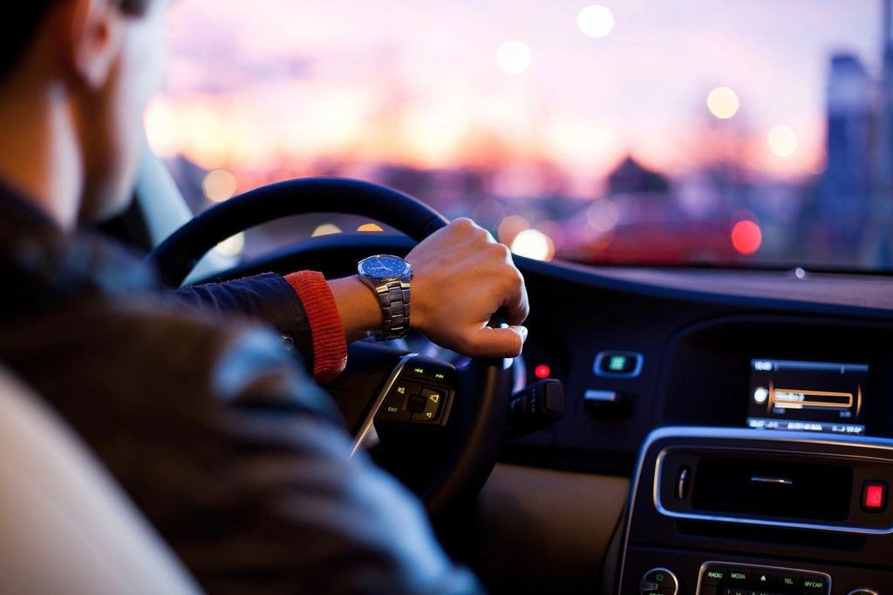

Från ansökan till anställning
- 1

Samtal och tester
Vi går igenom körkortstillstånd, läkarintyg och om du har en arbetsgivare eller går via Arbetsförmedlingen.
- 2

Teori och YKB
Fyra veckor i klassrum med YKB-moduler, regler för kör- och vilotider och lastsäkring.
- 3

Körning och praktik
Manöverbana, landsväg och vinterväg – sedan två veckors praktik på ett åkeri.
- 4

Prov och anställning
Körprov hos Trafikverket i Luleå eller Gällivare, och vi förmedlar kontakten med arbetsgivaren.
Fyra verksamheter, ett län
| Avdelning | Inriktning | Det här gör vi | Länk |
|---|---|---|---|
| Polarväg Tung | C, CE, D och YKB | Två skolor för tung trafik med 14 lastbilar, 4 bussar och egen manöverbana i Svartöstaden. | |
| Polarväg Bil | B, BE och risk | B-körkort i Luleå, Piteå, Boden, Kalix, Gällivare och Kiruna, med lokala lärare. | |
| Polarväg Företag | YKB, ADR och avtal | Fortbildning på depåer och industriområden i hela länet, med egen kursbuss. | |
| Isbanan Luleälven | Vinterkörning | Plogad bana på älvisen från januari till mars för halkkörning med bil och lastbil. |
Åkerier, bussbolag och kommuner
- Malmfältens Åkeri AB
- Gällivare Bussbolag AB
- Kalix Grus & Transport
- Luleå Hamnlogistik AB
- Bodens kommun
- Piteå kommun
- Tornedalens Timmer AB
- Kiruna Entreprenad & Last
Tolv år, sex orter, en region i omställning
Polarväg startades 2014 av Mikael Rantatalo, lastbilschaufför i tjugo år, och Sara Niemi, som drev en bilskola i Boden. Idén var enkel: åkerierna i Malmfälten fick inte tag på förare, och närmaste CE-utbildning låg tolv mil bort.
Senaste nytt

Sjätte skolan finns på Industrivägen, med B och tung trafik.

Sju av åtta hade jobb inom en månad efter körprovet.

Isen bär 52 centimeter och banan är plogad för både bil och lastbil.

Den sista dieselbilen konverterades före vintern.
Förare vi har utbildat åt andra
- Pågående

Malmfältens Åkeri
Tjugofyra nya förare utbildas för malmtransporter i treskift.
- Utfört

Arbetsmarknadsutbildning CE
Fyra kullar om 16 elever, med praktik på åkerier i hela länet.
- Utfört

Gällivare Bussbolag
Tolv nya bussförare inför att linjetrafiken flyttade till nya centrum.
- Utfört

Kalix Grus & Transport
Trettio förare fortbildade på egen depå under fem lördagar.
- Utfört

Bodens kommun
Körkort för 26 medarbetare i hemtjänst och personlig assistans.
- Utfört

Luleå Hamnlogistik
ADR-intyg med tankbehörighet för åtta förare i hamnens bränsletrafik.